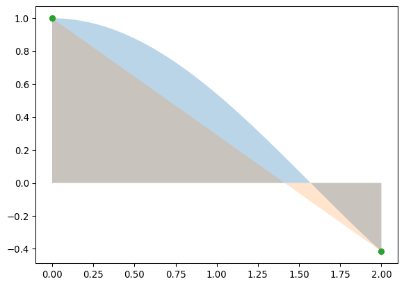
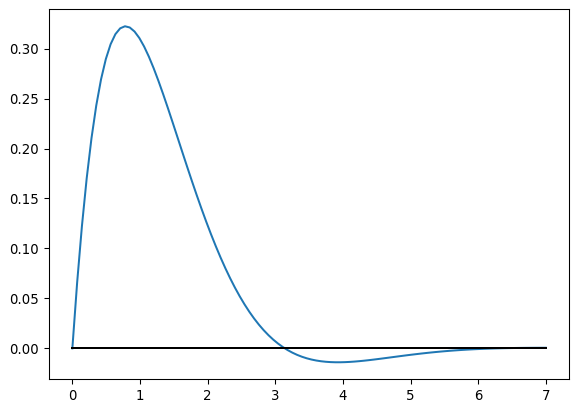

import numpy as np
import matplotlib.pyplot as pltIntegrales Numéricas
Incluso para funciones sencillas puede no ser posible obtener una respuesta analítica (“a mano”) para sus integrales. Por eso son importantes los métodos de integración. Empezaremos por los más sencillos.
Integrales de polinomios interpolantes
Nuestro primer intento es usar los polinomios interpolantes de Lagrange para integrar.
\[ \int_a^b dx\,f(x) = \int_a^b dx\, \sum_{i=0}^n f(x_i) L_i(x) + \int_a^b dx\,\prod_{i=0}^n (x - x_i) \frac{f^{(n + 1)}(\xi)}{(n + 1)!} \]
Interpolando toda la función con un polinomio lineal obtenemos la regla del trapecio
\[ \int_{x_o}^{x_1} dx\,f(x) = \frac{(x_1-x_o)}{2}[f(x_o) + f(x_1)] - \frac{h^3}{12}f''(\xi) \]
x = np.linspace(0,2,100)
plt.fill_between(x, np.cos(x), alpha=0.3)
plt.fill_between(x, np.cos(2)*x/2 - np.cos(0)*(x - 2)/2, alpha = 0.2)
plt.scatter([0,2], [np.cos(0), np.cos(2)])
def trapecio_uno(fxo, fx1, h):
return (h/2)*(fxo + fx1) trapecio_uno(np.cos(0), np.cos(2), 2)np.float64(0.5838531634528576)np.sin(2)np.float64(0.9092974268256817)Interpolando la función con un polinomio cuadrático obtenemos la regla de Simpson
\[ \int_{x_o}^{x_2} dx\,f(x) = \frac{h}{3}(f(x_o) + 4f(x_1) + f(x_2)) - \frac{h^5}{90}f^{(4)}(\xi) \]
(El término de error rigurosamente no se puede deducir a partir de los polinomios de Lagrange, ver libro)
x = np.linspace(0,2,100)
plt.fill_between(x, np.cos(x), alpha=0.3)
plt.fill_between(x, np.cos(0)*(x - 2)*(x - 1)/(2*1) - \
np.cos(1)*x*(x-2)/(1*1) + np.cos(2)*x*(x-1)/(2*1), alpha = 0.2)
plt.scatter([0,1,2], [np.cos(0), np.cos(1), np.cos(2)])def simpson_uno(fxo, fx1, fx2, h):
return (h/3)*(fxo + 4*fx1 + fx2)simpson_uno(np.cos(0), np.cos(1), np.cos(2), 1)np.float64(0.9150207956418055)Estos son casos especiales de la llamada fórmula de Newton-Cotes cerrada, que se apoya en el siguiente teorema (que no demostraremos):
Teorema: Sea \(f \in C^{n+2}[a,b]\), entonces existe un \(\xi \in (a,b)\) tal que
\[ \int_{a}^b dx\,f(x) = \sum_{i = 0}^n a_i f(x_i) + \frac{h^{n+3}f^{(n+2)}(\xi)}{(n + 2)!}\int_0^n dt\,t^2(t-1)...(t-n) \]
donde \(n\) es par, \(a_i = \int_a^b dx\, L_{n,i}(x)\) y \(x_o = a\), \(x_n = b\). Análogamente si \(n\) es impar y \(f \in C^{n+1}[a,b]\), entonces
\[ \int_{a}^b dx\,f(x) = \sum_{i = 0}^n a_i f(x_i) + \frac{h^{n+2}f^{(n+1)}(\xi)}{(n + 2)!}\int_0^n dt\,t^2(t-1)...(t-n) \]
Pero no necesariamente tenemos que escoger \(x_o = a\) y \(x_n = b\). Podemos tomar puntos que estén entre \(a\) y \(b\) pero sin usar los extremos para obtener los polinomios interpolantes. En este caso se usa la fórmula de Newton-Cotes abierta:
Teorema: Sea \(f \in C^{n+2}[a,b]\), entonces existe un \(\xi \in (a,b)\) tal que
\[ \int_{a}^b dx\,f(x) = \sum_{i = 0}^n a_i f(x_i) + \frac{h^{n+3}f^{(n+2)}(\xi)}{(n + 2)!}\int_{-1}^{n+1} dt\,t^2(t-1)...(t-n) \]
donde \(n\) es par, \(a_i = \int_a^b L_{n,i}(x)\) y \(a = x_o - h\), \(b = x_n + h\). Análogamente si \(n\) es impar y \(f \in C^{n+1}[a,b]\), entonces
\[ \int_{a}^b dx\,f(x) = \sum_{i = 0}^n a_i f(x_i) + \frac{h^{n+2}f^{(n+1)}(\xi)}{(n + 2)!}\int_{-1}^{n+1} dt\,t^2(t-1)...(t-n) \]
Un caso especial es la llamada regla del punto medio con \(n = 0\) (con \(h = (b - a)\)):
\[ \int_a^b dx\,f(x) = hf((b-a)/2) + \frac{h^3}{24}f''(\xi) \]
x = np.linspace(0,2,100)
plt.fill_between(x, np.cos(x), alpha=0.3)
plt.fill_between(x, np.cos(1), alpha = 0.2)
plt.scatter([1], [np.cos(1)])def punto_medio_uno(fxo, h):
return 2*h*fxopunto_medio_uno(np.cos(1), 1)np.float64(1.0806046117362795)Integrales compuestas
Para aproximar funciones más complicadas necesitaríamos polinomios de alto orden, pero ya sabemos que éstos pueden introducir oscilaciones indeseadas. Por eso podemos en cambio dividir el intervalo de integración en muchos intervalos pequeños de ancho \(h\) y obtener mejores aproximaciones a las integrales (como hubiera hecho Arquímedes).
Fórmula compuesta del punto medio:
\[ \int_a^b dx\,f(x) = h\sum_{i = 0}^n f((x_{i +1} - x_i)/2) + \frac{h^3}{24}\sum_{i=0}^n f''(\xi_i) \]
Pero hay un teorema (llamado del valor intermedio) que nos dice que si \(f''(x)\) es continua, existe \(\mu \in [\xi_o,\xi_n]\) tal que
\[ \frac{1}{n}\sum_{i=0}^n f''(\xi_i) = f''(\mu) \]
y dado que \(nh = (b-a)\) tenemos que
\[ \int_a^b dx\,f(x) = h\sum_{i = 0}^n f((x_{i +1} - x_i)/2) + \frac{h^2 (b - a)}{24} f''(\mu) \]
x = np.linspace(0,2,100)
plt.fill_between(x, np.cos(x), alpha = 0.3)
xi = np.array([0,1/2,1/2,1,1,3/2,3/2,2])
xp = np.array([1/4,1/4,3/4,3/4,5/4,5/4,7/4,7/4])
plt.fill_between(xi, np.cos(xp), alpha = 0.2)
plt.scatter(xp, np.cos(xp))
for i in range(len(xi)):
plt.plot([xi[i],xi[i]], [0,np.cos(xp[i])], color='black', alpha = 0.5, linestyle = ':')def punto_medio(f, a, b, n):
h = (b-a)/n
fx = f(np.linspace(a + h/2, b - h/2, n, endpoint=True))
return h*sum(fx)punto_medio(np.cos, 0, 2, 4)np.float64(0.9188387986651211)Fórmula compuesta del trapecio:
\[ \int_a^b dx\,f(x) = \frac{h}{2}\sum_{i=0}^{n-1}[f(x_{i+1}) + f(x_i)] - \frac{h^2 (b-a)}{12}f''(\mu) \]
Pero podemos reorganizar la suma
\[ \int_a^b dx\,f(x) = \frac{h}{2}\left[\sum_{i=1}^{n} f(x_i) + \sum_{i=0}^{n-1} f(x_i)\right]- \frac{h^2 (b-a)}{12}f''(\mu) \]
y esto es igual a
\[ \int_a^b dx\,f(x) = \frac{h}{2}\left[f(a) + 2\sum_{i=1}^{n-1} f(x_i) + f(b)\right]- \frac{h^2 (b-a)}{12}f''(\mu) \]
x = np.linspace(0,2,100)
plt.fill_between(x, np.cos(x), alpha = 0.3)
h = 2/4
def poly(x):
ind = int(x/h)
return -np.cos(h*ind)*(x - h*(ind+1))/h + np.cos(h*(ind+1))*(x - h*ind)/h
plt.fill_between(x, [poly(xi) for xi in x], alpha = 0.2)
xp = np.arange(5)*h
plt.scatter(xp, np.cos(xp))def trapecio(f, a, b, n):
h = (b - a)/n
fx = f(np.linspace(a+h, b-h, n-1, endpoint=True))
return (h/2)*(f(a) + 2*sum(fx) + f(b))trapecio(np.cos, 0, 2, 4)np.float64(0.890274325576322)Fórmula compuesta de Simpson: Se deduce de manera análoga
\[ \int_a^b dx\,f(x) = \frac{h}{3}\left[f(a) + 2\sum_{i=1}^{n/2-1} f(x_{2i}) + 4\sum_{i=1}^{n/2} f(x_{2i-1}) + f(b)\right]- \frac{h^4 (b-a)}{180}f''(\mu) \]
x = np.linspace(0,2,100)
plt.fill_between(x, np.cos(x), alpha = 0.3)
h = 2/4
def poly(x):
ind = int(x/(2*h))
Lo = (x - h*(2*ind+1))*(x - h*(2*ind+2))/(2*h*h)
L1 = -(x - h*(2*ind))*(x - h*(2*ind+2))/(h*h)
L2 = (x - h*(2*ind))*(x - h*(2*ind+1))/(2*h*h)
return np.cos(2*h*ind)*Lo + np.cos(h*(2*ind+1))*L1 + np.cos(h*(2*ind+2))*L2
plt.fill_between(x, [poly(xi) for xi in x], alpha = 0.2)
xp = np.arange(5)*h
plt.scatter(xp, np.cos(xp))A pesar de que la potencia de \(h\) de los métodos compuestos es menor (mayor error), en realidad no son comparables ya que \(h\) es mucho menor en los métodos compuestos.
Estabilidad de los métodos por polinomios interpolantes
El error de redondeo o intrínseco de estos métodos no cambia al cambiar \(h\). Esto quiere decir que el método es estable, pero cuando el error del método es lo comparable con el error intrínseco no se gana nada con reducir \(h\) ulteriormente.
Deduscamos este hecho para la regla de Simpson. Si \(f(x_i) = \tilde{f}(x_i) + e_i\) y si además \(e_i \leq \epsilon\) tenemos
\[ e(h) = \left|\frac{h}{3}\left[e_o + 2\sum_{i=1}^{n/2-1} e_{2i} + 4\sum_{i=1}^{n/2} e_{2i-1} + e_n\right]\right| \leq \frac{h}{3}\left|\epsilon + 2\left(\frac{n}{2} - 1\right)\epsilon + 4\frac{n}{2}\epsilon + \epsilon\right| = \frac{h}{3}3n\epsilon = (b - a)\epsilon \]
Métodos de paso variable
Los métodos vistos anteriormente funcionan bastante bien en muchos casos. Sin embargo esos métodos no son óptimos cuando una función varía mucho. Por ejemplo:
x = np.linspace(0,7,100)
plt.plot(x, np.exp(-x)*np.sin(x))
plt.plot(x, np.zeros(100), color = 'black')
Vemos que el intervalo entre \(x = 6\) y \(x = 7\) contribuye poco a la integral y además una aproximación burda puede ser buena allí. Se necesitan pocos puntos para lograr una buena aproxmación, que será cercana a cero. Sin embargo el intervalo entre \(x = 0\) y \(x = 3\) contribuye mucho a la integral de esta función y además la función varía rápidamente allí. Por lo tanto necesitaremos más puntos.
Método de cuadratura adaptativa
El método de paso adaptativo consiste en aproximar la integral como un polinomio interpolante en varios intervalos. El tamaño de cada intervalo es tal que el error cometido allí sea menor que una tolerancia \(\epsilon/f\), donde \(f\) es la fracción del rango de integración ocupada por el intervalo \(f = (b-a)/h\). De esta forma, la suma de la aproximación en todos los subintervalos tiene un error menor que \(\epsilon\).
Tenemos entonces dos tareas:
- Estimar el error cometido en una aproximación dada.
- Dividir el rango de integración para lograr el error requerido.
Para estimar el error habría que usar la fórmula de error de las aproximaciones de la clase pasada. El problema es que éstas involucran derivadas de alto orden. Recordemos la regla de simpson
\[ \int_{a}^{b} dx\,f(x) = \frac{h}{3}(f(a) + 4f(a + h) + f(b)) - \frac{h^5}{90}f^{(4)}(\xi) \equiv S_o - \frac{h^5}{90}f^{(4)}(\xi) \]
En general es difícil calcular la cuarta derivada, y estimarla numéricamente puede costar muchas evaluaciones de la función (además de ser inestable). Lo que podemos hacer es dividir el rango de integración a la mitad, y luego usar la regla de Simpson en cada mitad para obtener:
\[ \int_a^b dx\,f(x) = \frac{h}{6}(f(a) + 4f(a + h/2) + 2f(a + h) + 4f(a + 3h/2) + f(b)) - \frac{1}{16}\frac{h^5}{90}f^{(4)}(\bar{\xi}) \equiv S_1 - \frac{1}{16}\frac{h^5}{90}f^{(4)}(\xi) \]
Si asumimos que \(f^{(4)}(\bar{\xi}) \approx f^{(4)}(\xi)\), tenemos
\[ \frac{15}{16}\frac{h^5}{90}f^{(4)}(\xi) = S_o - S_1 \]
y entonces el error cometido al usar la aproximación S_1 es
\[ S_1 - \int_a^b dx\,f(x) = \frac{1}{15}(S_o - S_1) \]
Para determinar los intervalos de integración la estrategia es:
- Calcular la integral y el error en un intervalo.
- Si el error es mayor que la tolerancia, dividir el intervalo a la mitad.
- Repetir los pasos 1 y 2 para cada subintervalo.
class MaxIterations(Exception):
pass
def adaptive(f, a, b, tol, N=100_000):
# Variables iniciales
approx = 0
i = 0
toli = [10*tol]
ai = [a]
hi = [(b - a)/2]
fai = [f(a)]
fbi = [f(b)]
fci = [f(a + hi[i])]
S0i = [hi[i]*(fai[i] + 4*fci[i] + fbi[i])/3]
Li = [1]
while i >= 0:
fd = f(ai[i] + hi[i]/2)
fe = f(ai[i] + 3*hi[i]/2)
S1 = hi[i]*(fai[i] + 4*fd + fci[i])/6
S2 = hi[i]*(fci[i] + 4*fe + fbi[i])/6
ai_prec = ai[i]
hi_prec = hi[i]
fai_prec = fai[i]
fbi_prec = fbi[i]
fci_prec = fci[i]
toli_prec = toli[i]
S0i_prec = S0i[i]
Li_prec = Li[i]
i -= 1
if abs(S1 + S2 - S0i_prec) < toli_prec:
approx += S1 + S2
else:
if Li_prec >= N:
raise MaxIterations("Alcanzado máximo número de iteraciones.")
# Intervalo derecho
i += 1
if i >= len(ai): # A veces hay que ampliar la lista
ai.append(ai_prec + hi_prec)
fai.append(fci_prec)
fci.append(fe)
fbi.append(fbi_prec)
hi.append(hi_prec/2)
toli.append(toli_prec/2)
S0i.append(S2)
Li.append(Li_prec + 1)
else:
ai[i] = ai_prec + hi_prec
fai[i] = fci_prec
fci[i] = fe
fbi[i] = fbi_prec
hi[i] = hi_prec/2
toli[i] = toli_prec/2
S0i[i] = S2
Li[i] = Li_prec + 1
# Intervalo izquierdo
i += 1
if i >= len(ai):
ai.append(ai_prec)
fai.append(fai_prec)
fci.append(fd)
fbi.append(fci_prec)
hi.append(hi[i-1])
toli.append(toli[i-1])
S0i.append(S1)
Li.append(Li[i-1])
else:
ai[i] = ai_prec
fai[i] = fai_prec
fci[i] = fd
fbi[i] = fci_prec
hi[i] = hi[i-1]
toli[i] = toli[i-1]
S0i[i] = S1
Li[i] = Li[i-1]
return approxadaptive(np.cos, 0, 1, 0.00000001)np.float64(0.8414709892666887)¡Tareas!
Tarea 7.1
Ejercicio 4.4.22 del libro de Burden de análisis numérico.
La ecuación
\[ \int_0^x dt\,\frac{1}{\sqrt{2\pi}}e^{-t^2/2} = 0.45\,, \]
se puede resolver para \(x\) usando el método de Newton. Para lograrlo es necesario evaluar la función
\[ f(p) = \int_0^p dt\,\frac{1}{\sqrt{2\pi}}e^{-t^2/2} - 0.45\,. \]
Use el método compuesto del trapecio para evaluar esta función y luego use el método de Newton para encontrar \(x\) con una precisión de \(10^{-5}\).
Tarea 7.2
Use el método compuesto de Simpson y el método compuesto del trapecio para encontrar la siguiente integral
\[ \int_0^4 \frac{dx}{\sqrt{x^2 + 16}} \]
Compare con el resultado exacto para obtener el error cometido. Grafique el error en función de \(h\) para ambos métodos y compare con las fórmulas de error.
Tarea 7.3
Suponga que la medición de un cierto proceso físico da como resultado la siguiente expresión
\[ p(x) = \sin x + n(x) \]
donde \(n\) es el error experimental que podemos describir como un número aleatorio, para cada valor de \(x\), tomado de una distribución gaussiana con media \(0\) y desviación estándar \(10^{-5}\). Queremos calcular la integral
\[ \int_0^1 dx\,p(x)\,. \]
Use el método compuesto de Simpson para calcular esta integral. El verdadero valor de esta integral es \(1-\cos(1)\). Grafique el error cometido en función de \(h\). ¿Se puede lograr una precisión de \(10^{-7}\)? ¿Por qué?
Tarea 7.4
Calcule la integral de la función Gaussiana \(f(x) = \frac{1}{\sqrt{2\pi}}e^{-x^2/2}\) en el intervalo \((0, 3)\). Use el método de cuadratura adaptativa implementado en clase para varias tolerancias. Compare con el valor exacto y grafique el error cometido en función de la tolerancia. ¿Es lo que esperaba?
Para obtener el valor exacto, busque información sobre la llamada “función de error”.
Tarea 7.5
Calcule la integral del seno entre \(0\) y \(1\). Para ello use el método compuesto de Simpson y la cuadratura adaptativa implementada en clase. Hágalo para varias precisiones y grafique el tiempo que tardan ambos métodos en función de la precisión. (Para la precisión del método de Simpson es necesario usar la fórmula de error para calcular el número \(n\) de intervalos).